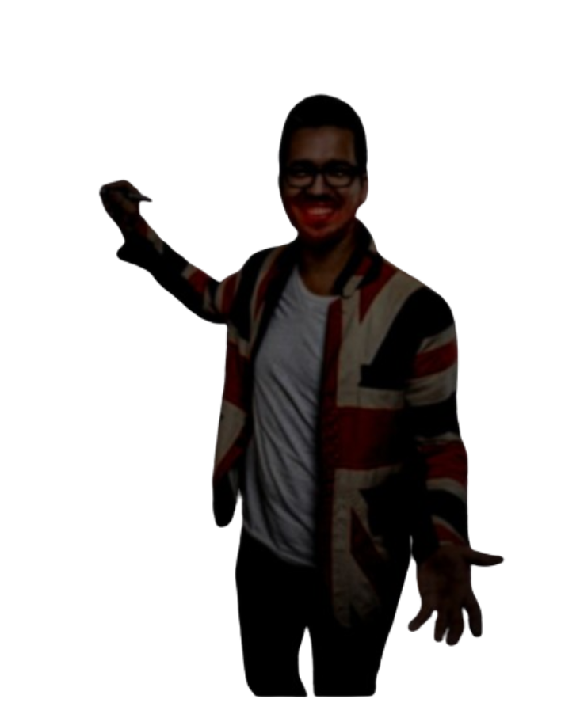

Je zit gevangen in een nachtmerrie. Overleef tot 6 uur 's ochtends in je slaapkamer tegen Meester Gijs.
In de wereld van de gijzeler gelden andere regels. Gebruik de weinige informatie die je hebt om zijn locatie te traceren. Stroom is beperkt. Je kunt niet voor altijd achter je verdedigingen schuilen.
12 AMStroom: 100%
REC CAM 1 · Woonkamer
CAM 1 · Woonkamer

DEURSYSTEEM BEHEER
LINKER DEUR
OPEN
Verbruik: 0.0%/s
RECHTER DEUR
OPEN
Verbruik: 0.0%/s
Totaal Deur Stroomverbruik: 0.0%/s (0.5%/s per gesloten deur)